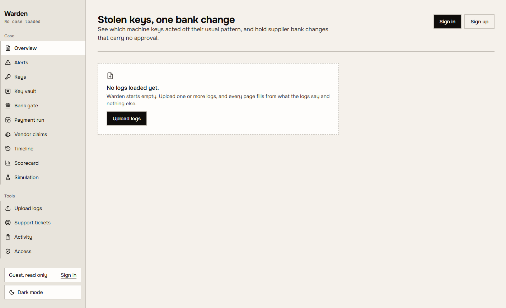
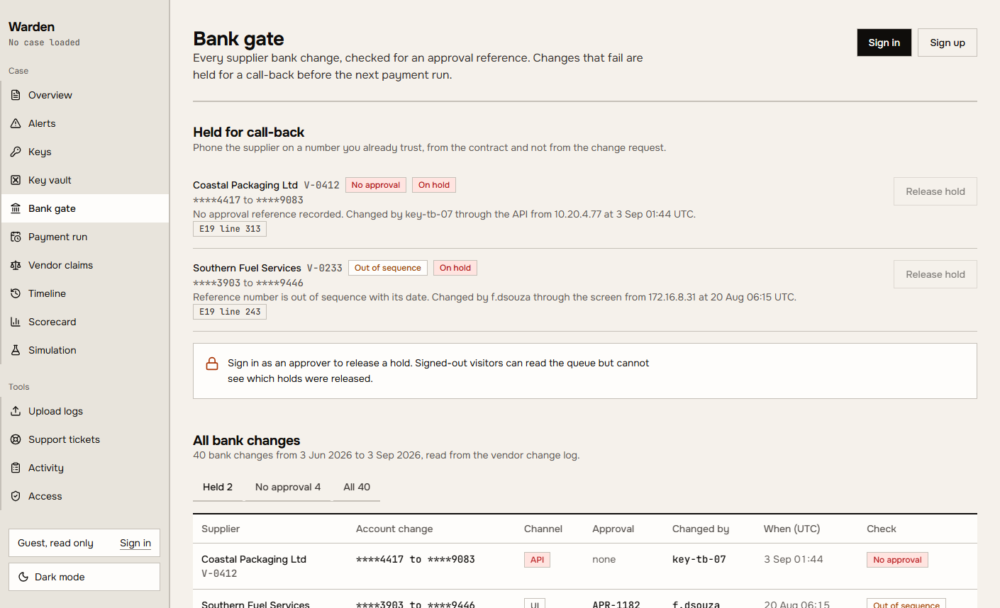
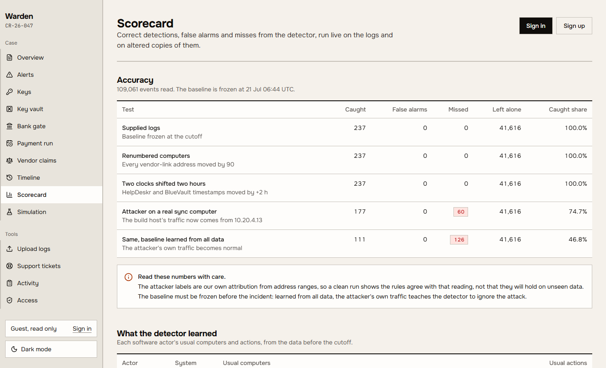
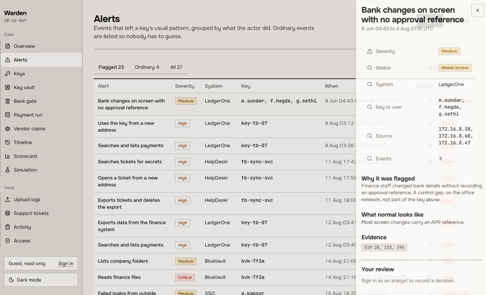
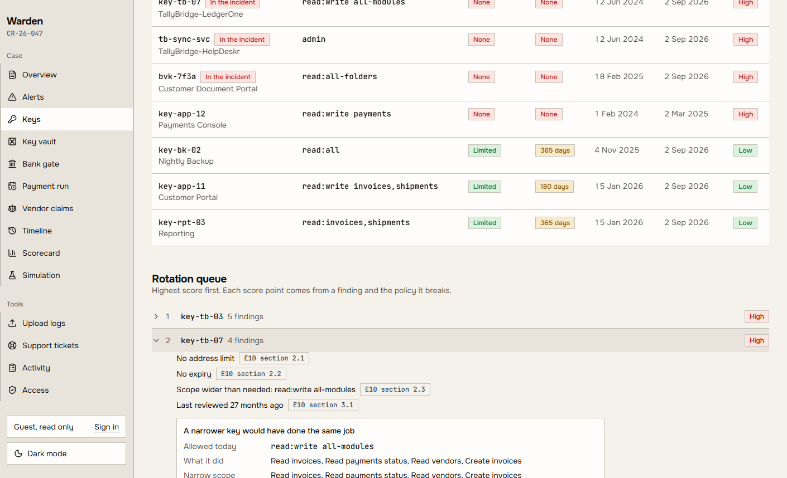
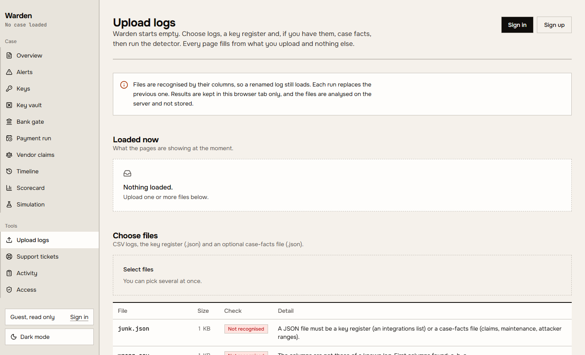
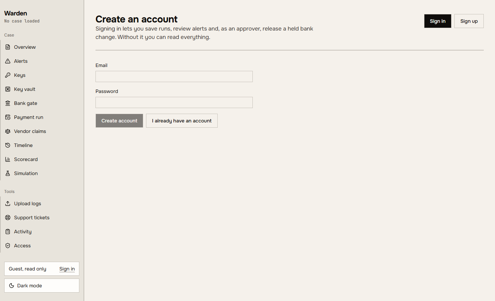
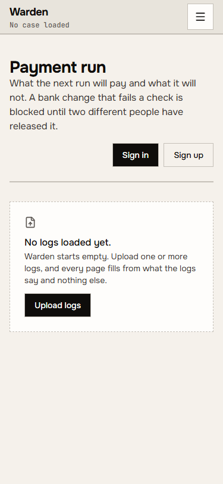
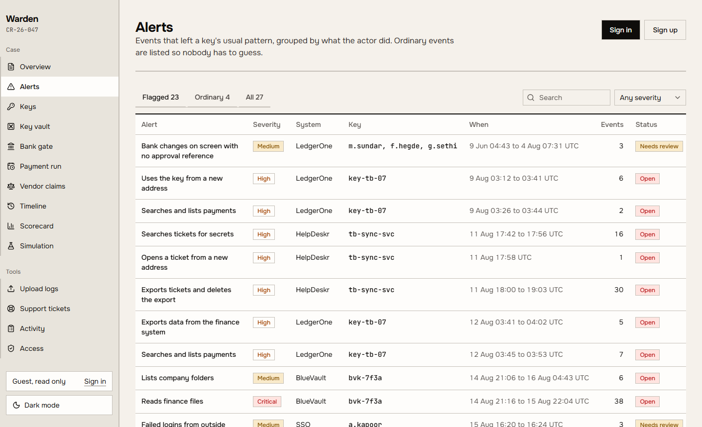
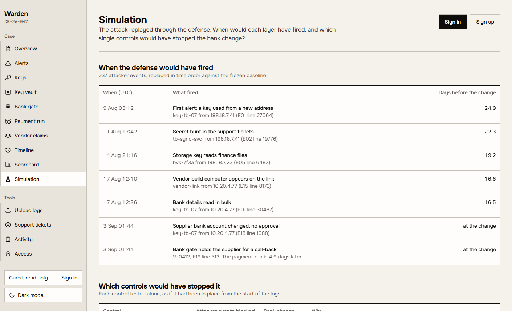

Selenium WebDriver (selenium-webdriver 4.53.0) drove a real Microsoft Edge browser through the app the way a person would: choosing files in the upload dialog, clicking buttons, reading what appears on screen, resizing to a phone, and reloading. The tests run against a production build of the app (Next.js next start), not the development server, because the development server is slower and would overstate load times.
| Environment | |
|---|---|
| Browser | MicrosoftEdge 157.0.4341.60, 1440 x 1000, headless |
| Driver / tool | 157.0.4341.60, selenium-webdriver 4.53.0, Node v26.13.1 |
| Machine | 11th Gen Intel(R) Core(TM) i5-1135G7 @ 2.40GHz, 8 logical CPUs, 7.6 GB memory, Windows_NT 10.0.26100 (x64) |
| Server | Next.js production build (next start), same machine (so there is no network delay in these numbers) |
| Data | The supplied evidence: 7 logs and the key register, 10.7 MB, 109,428 rows, plus the case-facts file |
| ID | Test and what it checks | Result | Time |
|---|---|---|---|
| T01 | The app starts empty No preloaded output: the overview asks for logs and the sidebar says no case is loaded. | PASS | 4.88 s |
| T02 | A renamed log is recognised by its columns E19 copied to bank-changes.csv is recognised and runs. | PASS | 1.22 s |
| T03 | The vendor change log alone holds the two suspicious bank changes E19 gives holds on V-0412 and V-0233 on the Bank gate. | PASS | 1.34 s |
| T04 | The BlueVault log alone finds the finance-file reads E05 gives a critical alert group of 38 reads. | PASS | 1.30 s |
| T05 | All eight files without case facts 109,061 events, 24 alert groups, 2 suppliers on hold. 109,061 events read, 24 alert groups, 2 suppliers on hold. | PASS | 3.56 s |
| T06 | All eight files with the case facts 23 alert groups, 8 claims, scorecard 237 caught. 109,061 events read, 23 alert groups, 2 suppliers on hold. | PASS | 5.11 s |
| T07 | Results survive a reload After a reload the overview still shows the case. | PASS | 733 ms |
| T08 | An alert opens with its reason and evidence Click an alert: the panel explains why and cites the evidence. | PASS | 1.19 s |
| T09 | A key shows what it did and a narrower scope key-tb-07 advises the address block 10.20.4.0/27. | PASS | 896 ms |
| T10 | The payment-run page uses the run days from the case facts A next-run date is shown. | PASS | 291 ms |
| T11 | A fixed address in a log is not what the detector depends on E02 with the attacker address replaced still raises the secret-hunt alert. | PASS | 1.97 s |
| T12 | Files that are not logs are refused A junk JSON, a wrong-column CSV and the staff roster are 'Not recognised'; nothing runs. | PASS | 644 ms |
| T13 | Clear and start again empties the app After loading logs, Clear and start again returns every page to its empty state. | PASS | 2.36 s |
| T14 | Signed-out visitors see sign-in buttons and gated pages say so Sign in and Sign up appear; Key vault, Support tickets and Activity ask for sign-in. | PASS | 1.61 s |
| T15 | A wrong password shows an error The sign-in form reports the failure from the database. | PASS | 1.94 s |
| T16 | The dark-mode toggle works The page switches to the dark theme. | PASS | 1.08 s |
| T17 | Phone width: no sideways scroll and a menu Key pages fit 375 px wide and show a menu button. | PASS | 4.19 s |
| T18 | Every page loads without browser errors Sixteen pages, no severe console errors, exactly one main heading each. 16 pages visited | PASS | 13.80 s |
| T19 | The analysis API behaves GET answers an empty analysis; POST with junk answers 400. | PASS | 247 ms |
All page timings are with the full dataset loaded (all 8 files and the case facts, 23 alert groups, 40 bank changes, 32 timeline rows). "Page ready" is measured from the moment the browser is told to open the page until the table data is visible, so it includes loading the page, running its code and drawing the data.
| Page | First visit: page loaded | First visit: data visible | Repeat: fastest | Repeat: average | Repeat: 95th percentile | Repeat: slowest |
|---|---|---|---|---|---|---|
| Overview | 125 ms | 173 ms | 391 ms | 433 ms | 481 ms | 481 ms |
| Alerts | 320 ms | 406 ms | 394 ms | 436 ms | 475 ms | 475 ms |
| Keys | 400 ms | 476 ms | 325 ms | 392 ms | 509 ms | 509 ms |
| Bank gate | 177 ms | 208 ms | 369 ms | 401 ms | 448 ms | 448 ms |
| Payment run | 196 ms | 269 ms | 350 ms | 386 ms | 454 ms | 454 ms |
| Vendor claims | 123 ms | 164 ms | 160 ms | 262 ms | 387 ms | 387 ms |
| Timeline | 371 ms | 478 ms | 156 ms | 189 ms | 249 ms | 249 ms |
| Scorecard | 175 ms | 211 ms | 158 ms | 180 ms | 200 ms | 200 ms |
| Simulation | 135 ms | 175 ms | 158 ms | 175 ms | 188 ms | 188 ms |
| Measure | Fastest | Average | 95th percentile | Slowest | Runs |
|---|---|---|---|---|---|
| Server analysis of all 8 files and the case facts (10.8 MB in, 54 KB out) | 1.81 s | 2.46 s | 3.40 s | 3.40 s | 7 |
| Whole upload in the browser: click "Run" until the results are on screen | 1.69 s | 2.47 s | 3.26 s | 3.26 s | 4 |
The same logs repeated 1, 2, 4 and 8 times, to find the worst case and where it breaks.
| Size | Log rows | Upload | Analysis time | Result |
|---|---|---|---|---|
| 1 x | 109,428 | 10.7 MB | 2.52 s | HTTP 200 |
| 2 x | 218,856 | 21.3 MB | 5.34 s | HTTP 200 |
| 4 x | 437,712 | 42.6 MB | 10.33 s | HTTP 200 |
| 8 x | 875,424 | 85.3 MB | 25.22 s | HTTP 200 |
Time grows roughly in step with the data. The largest case, 85.3 MB and 875,424 rows (about 8 times the supplied evidence), finished in 25.22 s.
| Case | Worst time | Detail |
|---|---|---|
| Slowest page, first visit | 478 ms | Timeline, fresh browser, data visible |
| Slowest page, repeat visits | 509 ms | Keys, slowest of 6 |
| Slowest across every page and run | 509 ms | Keys. In repeated complete runs of this suite the slowest page varied between roughly 200 ms and 300 ms, so expect a run-to-run spread of about 100 ms. |
| Running the detector on the supplied evidence | 3.26 s | From clicking Run until the results are on screen |
| Stress case (85.3 MB, 875,424 rows) | 25.22 s | Server analysis only |
Two other issues found while writing the tests were in the tests, not the app: the app uses smooth scrolling, so a test must scroll instantly before it clicks, and the browser's own start page writes a harmless message to the log, which the tests now ignore.









